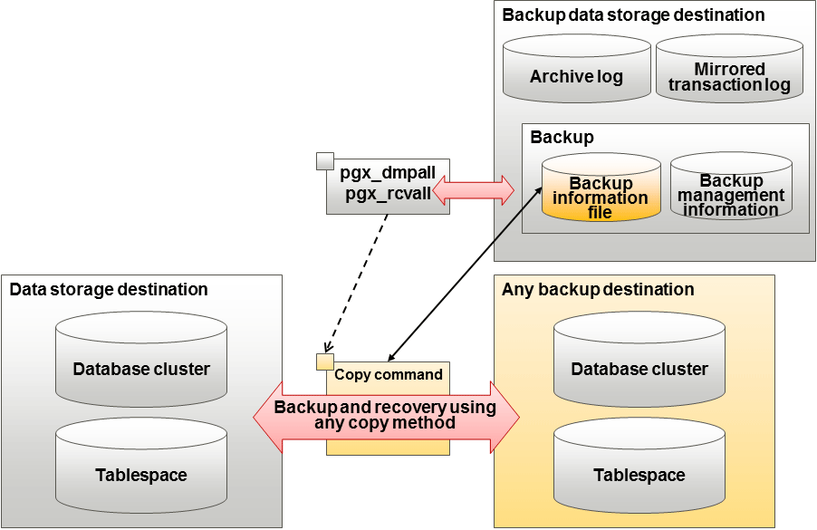

By using a copy command created by the user, the pgx_dmpall command and the pgx_rcvall command can perform backup to any destination and can perform recovery from any destination using any copy method.
Copy commands must be created in advance as executable scripts for the user to implement the copy process on database clusters and tablespaces, and are called when executing the pgx_dmpall and pgx_rcvall commands.
This appendix describes backup/recovery using the copy command.

Point
It is also possible to back up only some tablespaces using the copy command. However, database resources not backed up using the copy command are still backed up to the backup data storage destination.
Note
Both the backup data storage destination and the optional backup destination are necessary for recovery - if they are located in secondary media, combined management of these is necessary.